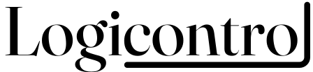
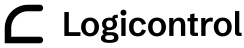

Fișa de identitate a conceptului „Current” · previzualizare internă, neindexată. Propunere, nu identitate aprobată.
Current.
00 Ideea
„Current” tratează site-ul ca pe un reportaj despre o clădire care funcționează. Secțiunile editoriale, pe hârtie caldă, prezintă serviciile cu tipografie mare și ritm de revistă. Când conținutul devine sistem — proiectul, demonstrația — pagina se întunecă în trepte, ca o clădire după program, apoi revine la lumină pentru oameni și contact. O singură linie de curent leagă totul: subliniază promisiunea din titlu, trece prin fiecare serviciu, devine circuitul care duce comanda către fiecare zonă și se oprește la discuție. Mișcarea apare doar când explică o stare.
Două propuneri de logo
Ambele sunt originale, desenate pentru acest concept, cu textul convertit în contururi. Fișierele SVG din logo/ pot fi editate manual (fără imagini raster sau base64).
A — Linia din „i”
Wordmark editorial în Fraunces (opsz 144, greutate 430). Tija literei „i” nu este un glif: este linia de curent, care coboară sub linia de bază și subliniază „control”. Logica alimentează controlul; punctul literei rămâne sursa.
Color · hârtieColor · cerneală

Monocrom negruMonocrom alb
B — Bucla C–L
Un singur traseu continuu: intră sus, se rotunjește ca un „C”, coboară și revine pe bază ca un „L”. Comanda pleacă, confirmarea se întoarce — aceeași logică pe care o arată demonstrația. Simbolul este însoțit de un wordmark în Schibsted Grotesk (620) și funcționează singur ca favicon.
Color · hârtieColor · cerneală

Monocrom negruMonocrom alb
↘ Test la dimensiuni mici (24–32 px)
24 px
28 px
32 px
24 px
28 px
32 px
Observație: la 24 px, linia opțiunii A rămâne vizibilă, dar firele subțiri din Fraunces devin fragile; pentru favicon și avatar se recomandă simbolul B.
Motivul: linia de curent
O singură linie continuă traversează pagina principală. Pe fundal deschis folosește albastrul ultramarin; pe fundal închis, nuanța luminoasă. Nu este decor: arată cum sistemele lucrează împreună.
Trasee ortogonale, cu colțuri rotunjite (raza 14–36 px, în funcție de marginea paginii); fără curbe libere sau rețele decorative.
Linia se desenează pe măsură ce cititorul avansează; nodurile serviciilor se umplu când linia ajunge la ele.
În demonstrație, linia devine circuitul: comanda pleacă pe ea către zonă, iar zona se aprinde doar după confirmare.
Cu „reducerea mișcării” activată, linia este desenată complet și static, iar confirmarea este imediată.
Paletă și roluri
Hârtie caldă și cerneală adâncă pentru narațiune; un singur accent, ultramarinul „curentului”, cu o nuanță separată pentru fundalurile închise. Lumina caldă este rezervată zonelor aprinse din demonstrație.
Aa
Hârtie#F4EFE6Fundal editorial
Aa
Hârtie adâncă#E8E0D1Secțiunea de contact, plăci
Aa
Cerneală#17142BText pe deschis
Aa
Cerneală secundară#57516BText secundar pe deschis
Aa
Noapte#110F24Secțiuni de sistem
Aa
Noapte ridicată#1C1936Panouri; text secundar #B3ADC6
Aa
Curent#2A36E8Accent, linie, acțiune principală pe deschis
Aa
Curent luminos#8F99FFAccent, linie și focus pe închis
Aa
Lumină#FBF1D9Zonă aprinsă (amestecată după nivel)
Aa
Atenționare#F5A6B6Avertismente pe închis (nu alarmă)
Aa
Eroare#A8203EValidarea formularului pe deschis
Contrast WCAG 2.x măsurat (calcul de luminanță relativă; AA text normal ≥ 4,5:1, elemente UI ≥ 3:1)
Text / element
Fundal
Raport
Rezultat
AaCerneală #17142B
Hârtie #F4EFE6
15,65:1
AAA
AaCerneală #17142B
Hârtie adâncă #E8E0D1
13,67:1
AAA
AaCerneală secundară #57516B
Hârtie #F4EFE6
6,56:1
AA
AaCerneală secundară #57516B
Hârtie adâncă #E8E0D1
5,73:1
AA
AaCurent #2A36E8
Hârtie #F4EFE6
6,57:1
AA
AaHârtie #F4EFE6 (buton)
Curent #2A36E8
6,57:1
AA
AaHârtie #F4EFE6
Noapte #110F24
16,41:1
AAA
AaHârtie #F4EFE6
Noapte ridicată #1C1936
14,77:1
AAA
AaSecundar #B3ADC6
Noapte #110F24
8,69:1
AAA
AaSecundar #B3ADC6
Noapte ridicată #1C1936
7,82:1
AAA
AaCurent luminos #8F99FF
Noapte #110F24
7,31:1
AAA
AaCurent luminos #8F99FF
Noapte ridicată #1C1936
6,58:1
AA
AaNoapte #110F24 (buton)
Curent luminos #8F99FF
7,31:1
AAA
AaAtenționare #F5A6B6
Noapte #110F24
9,85:1
AAA
AaCerneală #17142B
Zonă aprinsă 60% #C5BDB2
9,64:1
AAA
AaEroare #A8203E
Hârtie #F4EFE6
6,23:1
AA
AaCurent #2A36E8
Noapte #110F24
2,50:1
Nu se folosește — de aceea există nuanța luminoasă
Tipografie
Fraunces pentru titluri și citate, cu axa de dimensiune optică automată (9–144) și axa SOFT: 0 pentru titluri ferme, 40 pentru citate mai calde. Schibsted Grotesk pentru text, interfață și etichete.
Fraunces · 370–460 · opsz automat · SOFT 0
Control clar pentru clădiri complexe.
Ă Â Î Ș Ț ă â î ș ț
Ș Ț ș ț — SOFT 100
Schibsted Grotesk · 400 / 500 / 600 / 700
Integrare BMS, depanare, programare și mentenanță.
Ă Â Î Ș Ț ă â î ș ț
Investigăm alarme repetate, comenzi fără efect și comportamente inconsistente, pornind de la date verificabile. Logică de control, programe orare și verificări funcționale, documentate pentru echipa de exploatare.
Regular 400Medium 500Semibold 600Bold 700
Fonturi, licențe și surse
Fraunces — Undercase Type (Phaedra Charles, Flavia Zimbardi)
Patru fișiere woff2 găzduite local în fonts/, în total circa 294 KB; niciun CDN la rulare. Literele ș ț (U+0218–U+021B) sunt în subsetul latin-ext și au fost verificate în browser.